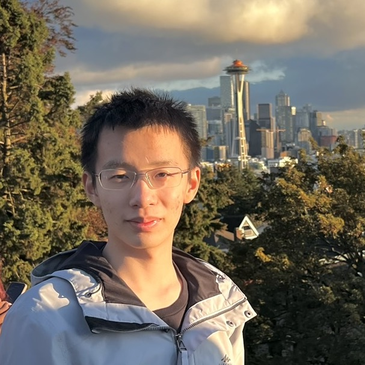
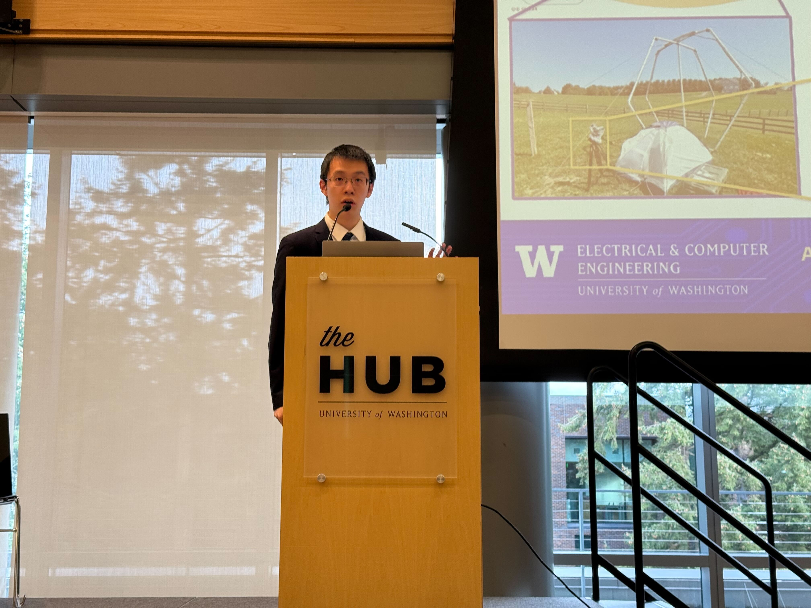
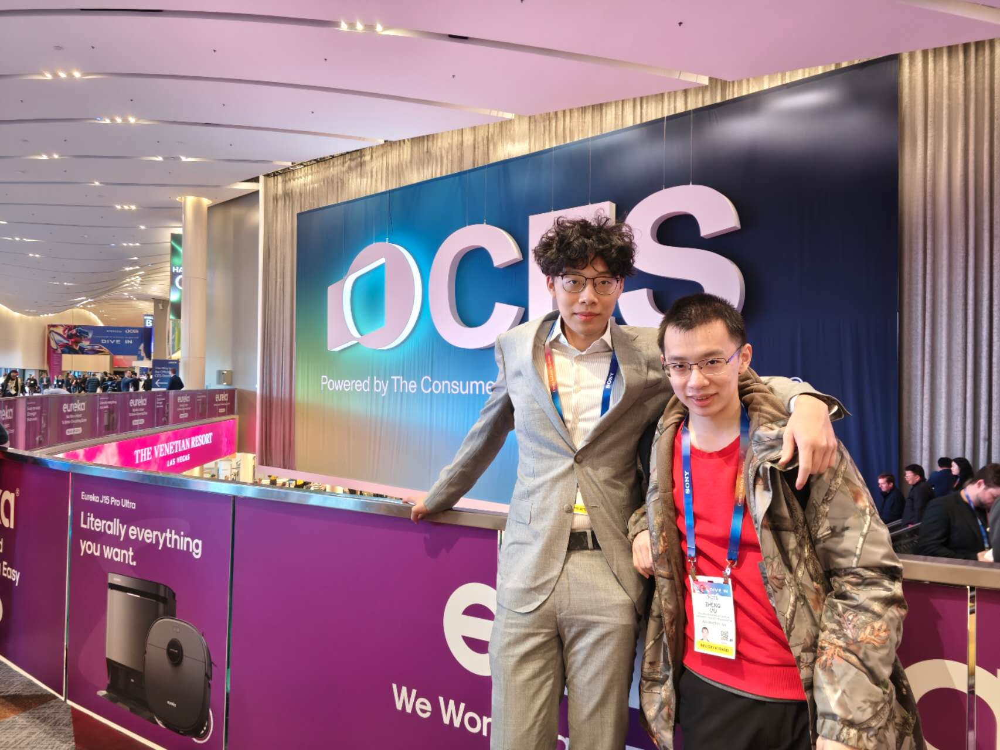
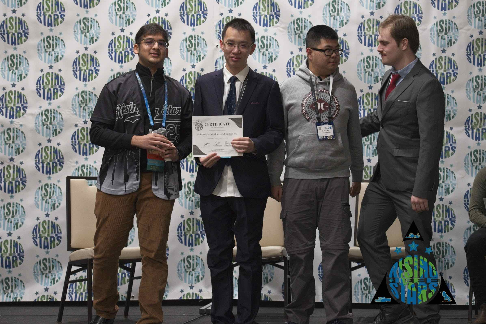
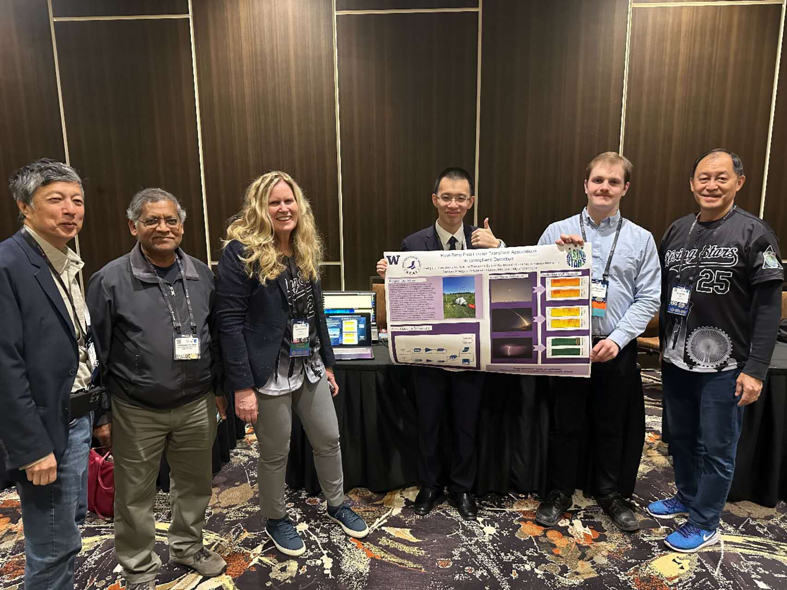
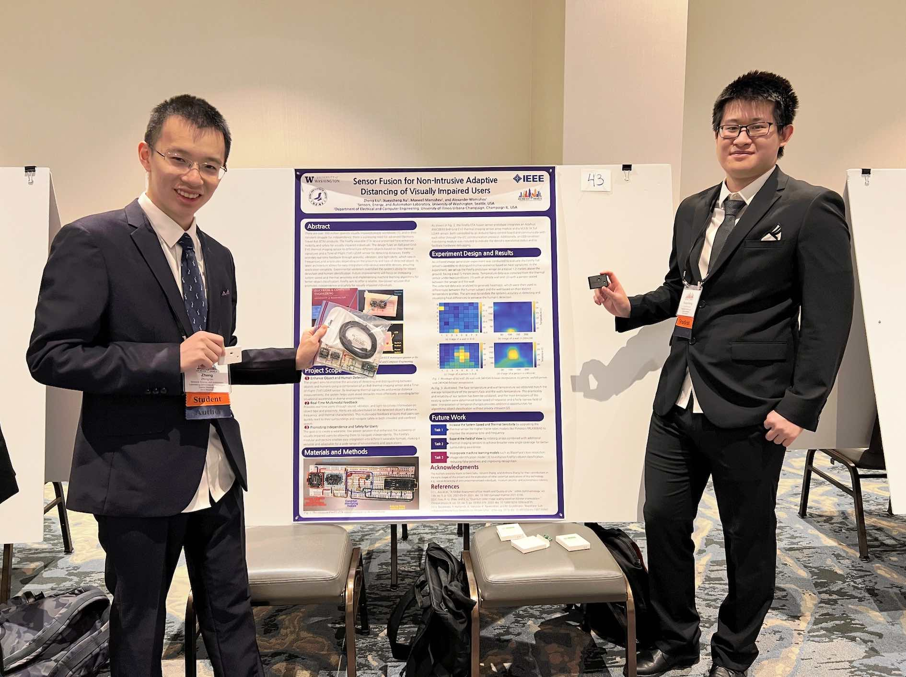

University of Washington · SEAL Lab
Sensing systems researcher. 7+ IEEE publications.
Leading 20 researchers as an undergraduate.

I am a senior undergraduate researcher in the Department of Electrical and Computer Engineering at the University of Washington, working in the Sensors, Energy, and Automation Laboratory (SEAL) under Prof. Alexander V. Mamishev. My research centers on sensing systems — designing hardware, processing signals, and extracting actionable insight across domains ranging from ionospheric detection to biomedical wearables to environmental monitoring.
As Student PI, I lead a 20-member research group and have co-authored 7+ IEEE publications, built field-deployed sensing systems, and developed classification algorithms for atmospheric phenomena. My work has been recognized with an IEEE ComSoc Worldwide Student Competition Second Prize and multiple innovation challenge awards totaling $6,500 in funding.
B.S. Electrical & Computer Engineering
Minor: Experimental Physics
University of Washington
Expected: June 2026
Dean's List: 6 consecutive quarters
SEAL Lab, University of Washington
Role: Student PI, Project Manager, First Co-author, Hardware Engineer
Advisors: Prof. Mamishev, Prof. Makhsous, Dr. Donnangelo, Dr. Batson
SEAL Lab, University of Washington
Role: Co-author, System Architect Contributor
Advisors: Prof. Mamishev, Prof. Makhsous
SEAL Lab, University of Washington
Role: Project Manager, First Co-author
Advisors: Prof. Mamishev, Prof. Makhsous, Dr. Donnangelo, Dr. Batson
SEAL Lab, University of Washington
Role: Embedded Engineer, First Co-author
Advisor: Prof. Mamishev
SEAL Lab, University of Washington
Role: Project Participant, Co-author
Advisors: Prof. Makhsous, Prof. Mamishev, Mr. Nathan
SEAL Lab, University of Washington
Role: Project Mentor, Data Analyst, First Co-author
Advisors: Prof. Mamishev, Mr. Nathan
SEAL Lab, University of Washington
Role: Co-author
Total research funding received: $6,500
$1,500 · International recognition for CommUnity project
$1,000
$2,000 · Health innovation funding for FireFly
Selected as 1 of 2 featured students out of ~40 members
Runner-Up Presentation Award
$1,200
$800
SEAL Lab, University of Washington
Reviewed: "Machine Learning in Gas Sensing: Paradigm Shift for Enhanced Detection and Selectivity — A Review"
Reviewed: "Adaptive Illumination Pulsed Time-of-Flight Sensor"
SEAL Lab, University of Washington
University of Washington
University of Washington
University of Washington

Presenting Advanced Modeling and Sensor Network Design for Real-Time Characterization of the Ionospheric D-Region at UW 2025 ECE Research Showcase.

Attending CES 2025 in Las Vegas — the world's largest tech event.

Runner-Up Presentation Award for Real-Time FFT Applications in Ionospheric Detection at IEEE Rising Stars 2025.

Presenting to the IEEE President, IEEE USA President, and Former IEEE Region 6 President at IEEE Rising Stars 2025.

Presenting Sensor Fusion for Non-Intrusive Adaptive Distancing of Visually Impaired Users at IEEE BSN 2024 in Chicago.